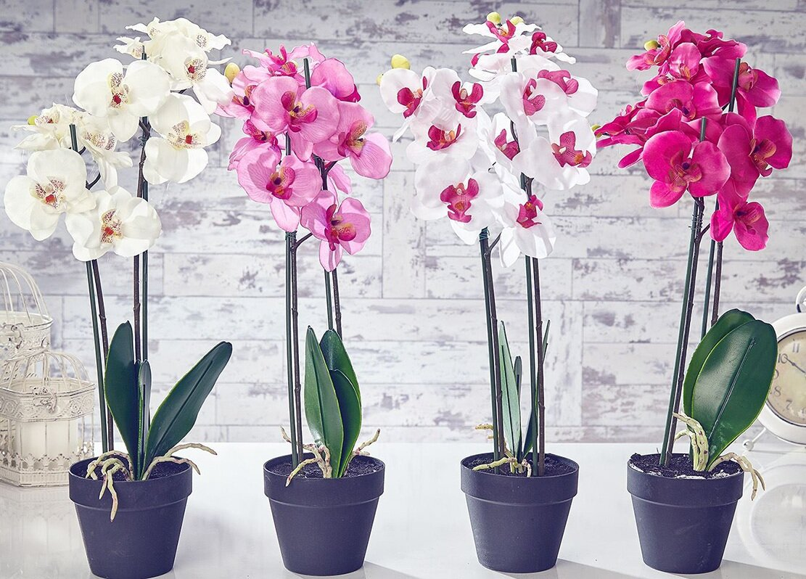

Где цветут цветы, там и надежда (Бред Джонсон)
Сейчас довольно трудно сказать, откуда родом это растение. Первые орхидеи появились еще более 100 миллионов лет назад. В Китае и Японии цветы выращивают уже на протяжении 4000 лет. В странах Европы растения растут уже около 200 лет. Некоторые считают, родина орхидей – Южная Америка, там они растут в хорошем для них климате. В России тоже прорастает около 500 видов орхидей. Одним словом, родина цветов – не конкретно взятая страна, а то место, где буйно растет зелень, а сквозь густые листья редко попадает солнце. Еще одна отличительная черта этого цветка в том, что он может расти не только на земле, но и на других растениях. Иные сорта цветов можно встретить вблизи водоемов или на скалах.
Цветок упоминается философом из Греции – Теофрастом, он жил в VI-V вв. до нашей эры. Он и дал название цветку. В своей книге о фармацевтической ботанике философ описывает растение, у которого есть два бугорка и закругленные корни у основания. Он назвал растение «orchis», с греческого это слово переводится как «яички». Корни цветов округлой или плоской формы. Ими растения могут уцепиться за камень или, например, кору другого растения, при этом корни не пересыхают. Сегодня в мире насчитывается более 25 тысяч видов растения. Причем разводят цветы не только на улице или в теплицах, но и дома на подоконниках.
Первые комнатные растения появились в Китае в XI веке. В Китае очень любят этот цветок, считают его способным отгонять злых духов. Цветок связан с приходом весны. Его широко используют в украшениях на весенних праздниках. И уже на протяжении тысячелетий орхидею культивируют как домашнее растение. Но условия содержания для комнатных видов должны быть приближены к их естественной среде обитания.
